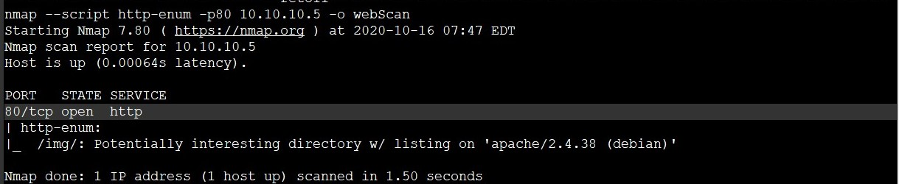
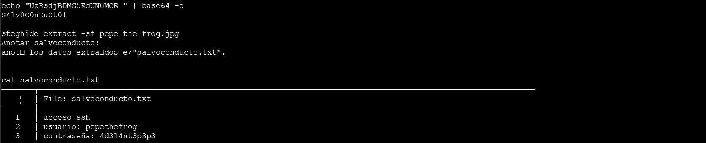
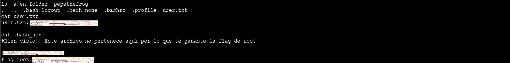

Pepe the Frog
Enumeracion de servicios y puertos
Empezaremos con NMAP y creo que la usaremos mucho :nmap -p- --open T5 -n url vemos el puerto 80 abierto y lo escaneamos un poco mas a fondo .
Con nmap usando la opción --script http-enum nos reporta que hay una carpeta img hasta ahí bien abrimos el navegador y con la ip victima la cargamos , a mi me gusta mirar el código fuente y observamos que hay un string en base64 , UzRsdjBDMG5EdUN0MCE=. La desciframos con un echo como vemos en la imagen sale la palabra salvoconducto. Los salvoconductos son utilizados para descifrar imagenes con Esteganografía.
Ahora accedemos en la carpeta img con en el navegador y nos aparece una imagen. La descargamos y ahora tenemos una imagen y un salvoconducto hummm!!. Usaremos Steghide para comprobar si hay algo oculto nos pide un salvoconducto se lo damos y premio nos reporta un archivo de texto.

Acceso a la maquina por SSh
En nuestra terminal usaremos las credenciales del archivo de texto ssh 10.10.10.XX
Credenciales
usuario: Pepethefrog pass: 4d3l4nt3p3p3
Bueno pues ya estamos dentro de la maquina victima y vemos que estamos en la carpeta pepethefrog listamos para ver que hay en la carpeta y nos aparece la primera Flag user.txt, listamos otra vez con ls -a para ver archivos y carpetas ocultos y vemos otro archivo que no me cuadra .bash_none le hacemos un cat y zas en toda la boca, la siguiente Flag root.txt.
Herramientas utilizadas para este reto:
Foro CHE y grupo de telegram
Podeis pedir ayuda de cualquier reto a la comunidad. Grupo de Telegram